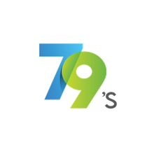
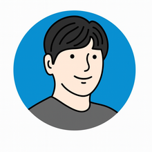

WakeMedi
스마트 기상 & 복약 루틴 관리
전화 수신형 풀스크린 모닝콜과 정밀 복약 스케줄러로 아침 기상과 건강한 약 복용 습관을 완성합니다.
- 전화 수신형 풀스크린 모닝콜 알람
- 식전/식후 시간별 복약 & 순응도 통계
- 가족/내 목소리 녹음 커스텀 보이스
- QR 코드 및 딥링크 알람 설정 공유
Independent App Studio
79's Labs(친구들랩스)는 사용자의 삶에 지속적으로 도움이 되는 소프트웨어를 직접 기획, 개발, 운영하는 독립 앱 스튜디오입니다. 불필요한 서버 의존성을 낮추고, 기기 안(On-device)에서 빠르고 안전하게 동작하는 제품을 만듭니다.

Our Products
일회성 기능이 아닌, 사용자의 일상 루틴과 성장, 건강 회복에 자연스럽게 녹아드는 3개의 라이브 프로덕트를 서비스하고 있습니다.
스마트 기상 & 복약 루틴 관리
전화 수신형 풀스크린 모닝콜과 정밀 복약 스케줄러로 아침 기상과 건강한 약 복용 습관을 완성합니다.
듣고 말하는 온디바이스 문장 학습
읽고, 듣고, 내 목소리로 따라 말하는 3단계 사이클과 자가 진단 복습 시스템으로 문장을 체득합니다.
스트레스 & 바이오 회복 기록
심박변이도(HRV)와 수면, 일상 습관을 결합해 신체 스트레스와 회복 상태를 온디바이스로 분석합니다.
Core Principles
79's Labs의 모든 앱은 화려한 껍데기보다 사용자의 신뢰와 프라이버시, 지속 가능한 가치를 우선합니다.
복잡한 가입 절차나 클라우드 서버 강제 없이, 앱을 켜는 순간 내 기기 내부의 안전한 로컬 저장소에서 민첩하게 동작합니다.
과장된 수치나 자극적인 알림으로 사용자를 불안하게 하지 않고, 명확한 근거와 시각적 데이터로 투명한 통찰을 전합니다.
개발자 시선의 어려운 전문 용어 대신, 누구나 한눈에 직관적으로 이해하고 손쉽게 다룰 수 있는 인터페이스를 지향합니다.
Future Direction
3개의 검증된 독자 제품을 기반으로, 더 지능적이고 유기적인 온디바이스 에코시스템을 확장해 나갑니다.
개인 데이터를 외부로 보내지 않고 기기 내 로컬 머신러닝 엔진을 활용해 개인 맞춤형 문장 학습 추천과 바이오 패턴 분석을 정교화합니다.
Android 및 Wear OS 환경에서 다져진 신뢰성을 바탕으로 iOS, watchOS, 태블릿 및 데스크톱 환경으로의 크로스플랫폼 확장을 추진합니다.
글로벌 오픈된 WakeMedi의 운영 노하우를 바탕으로, 12개 다국어 엔진을 품은 Saytence와 BodySignal의 글로벌 순차 출시를 추진합니다.

Founder & Lead Engineer
79's Labs는 기획, UI/UX 설계, Flutter 기반 크로스플랫폼 코어 개발, 스토어 출시 및 서비스 운영까지 전 과정을 직접 빌딩하는 1인 독립 소프트웨어 스튜디오입니다. 단순한 유행을 좇기보다 사용자의 일상을 실질적으로 개선하는 완성도 높은 제품을 지속적으로 만듭니다.